Appcivist
I worked with the Social Apps Lab in Citris on Appcivist, a platform for communication and organization for social activists. I worked on a team of 3 designers to design the user experience of the web application, and built wireframes using Adobe Illustrator. You can read more about the project here.
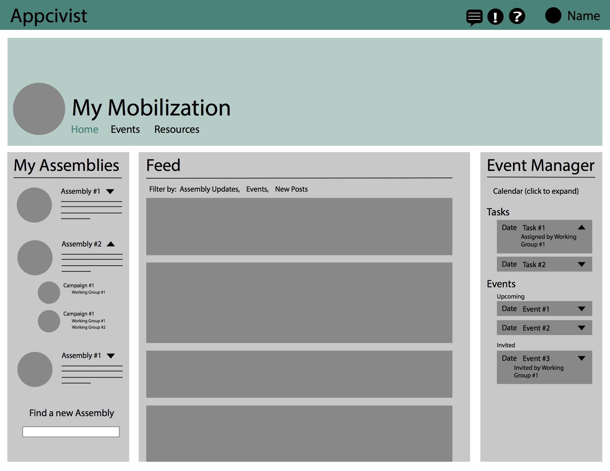
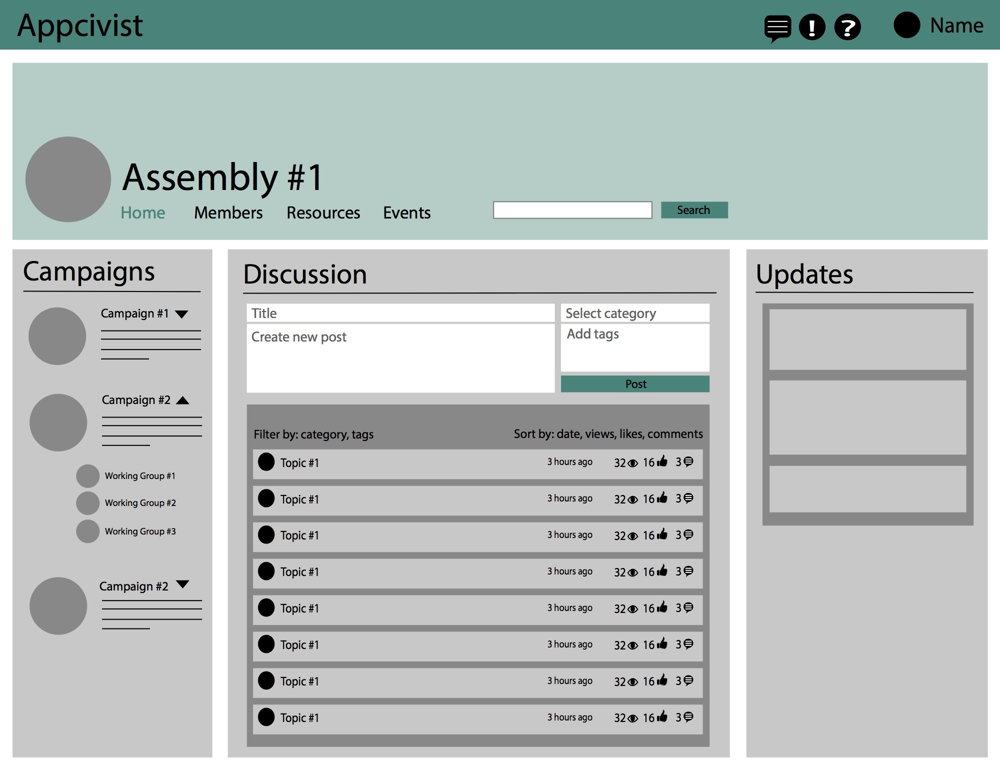

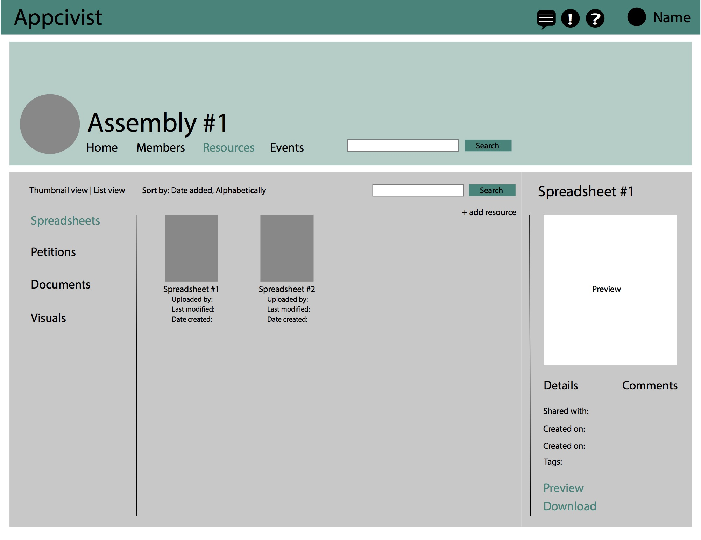
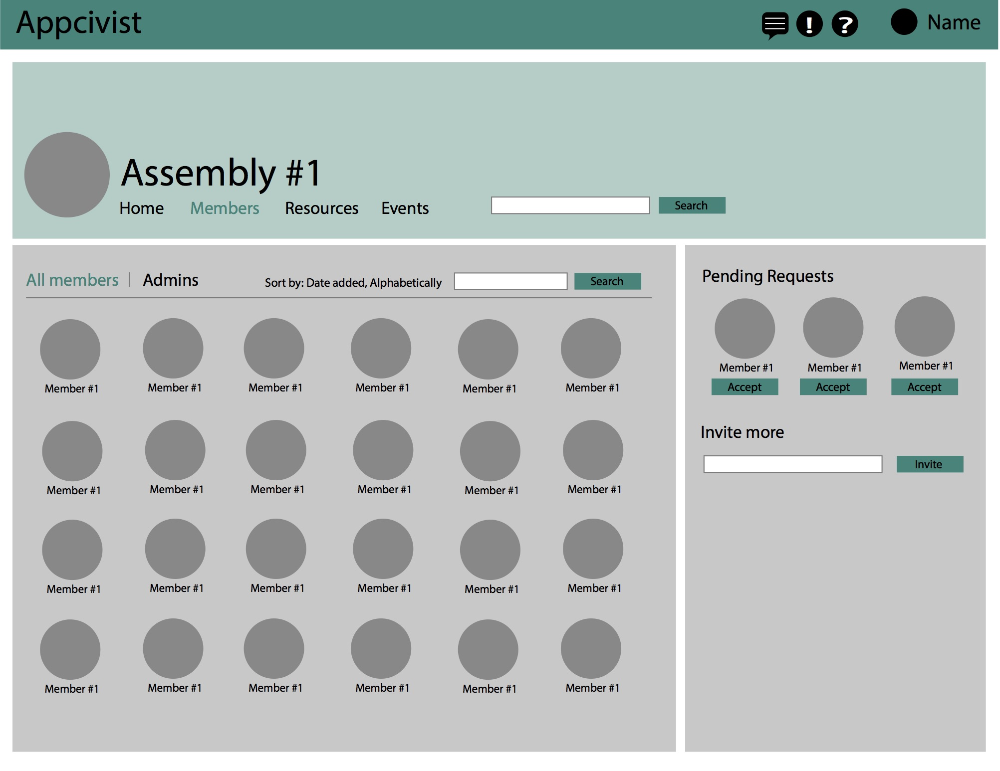
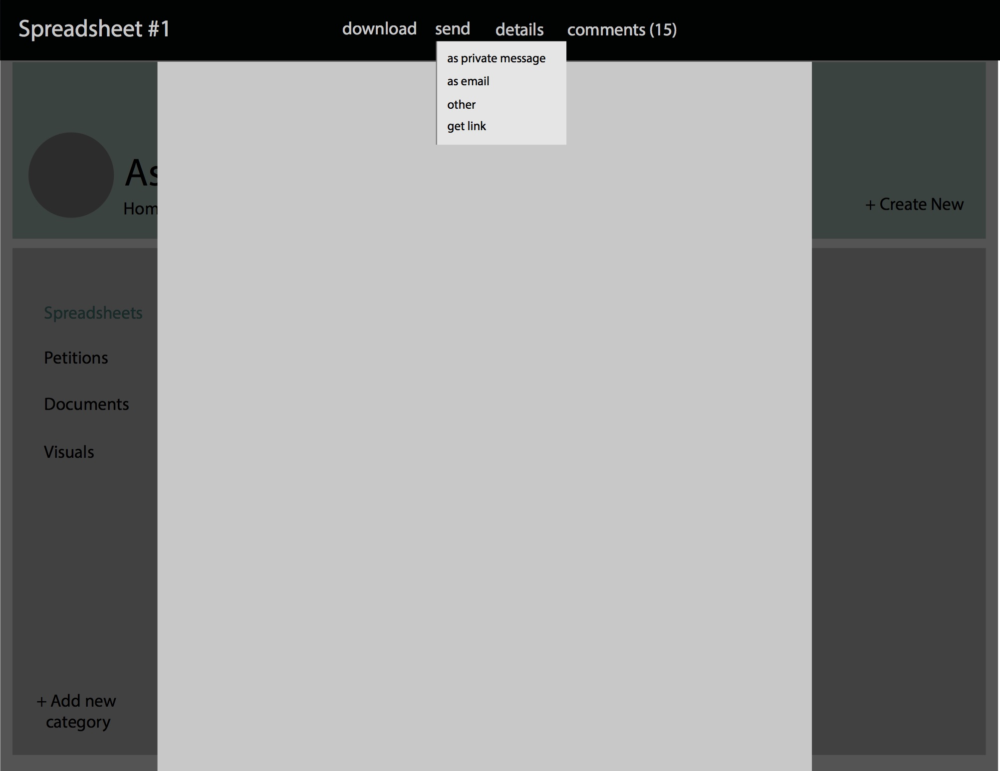
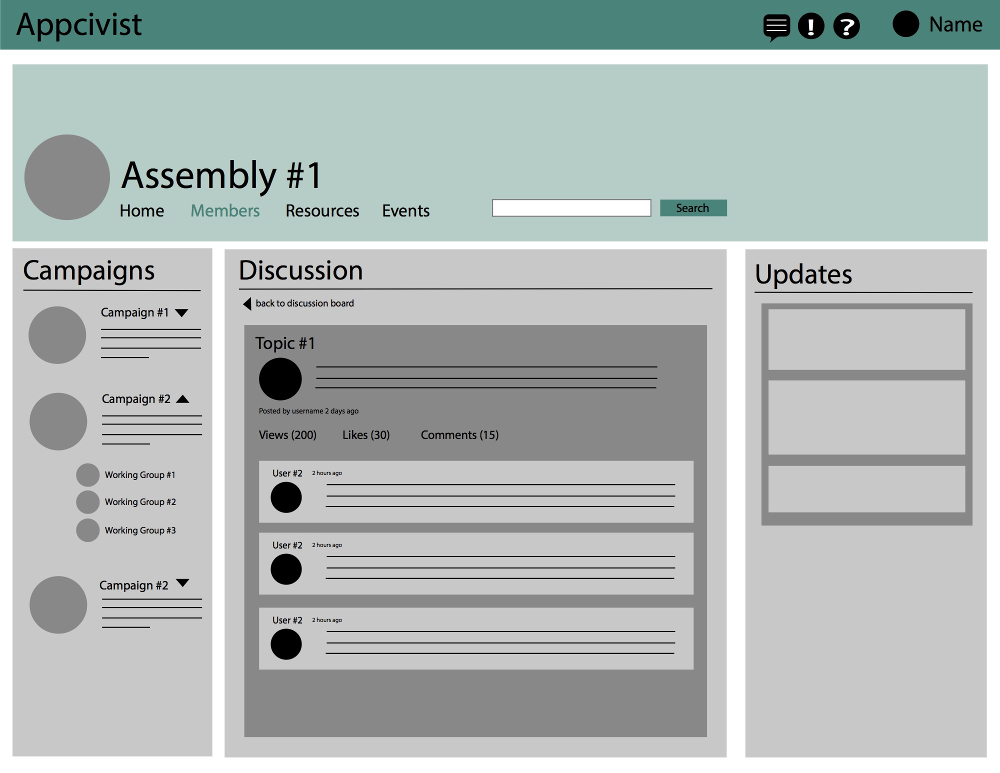

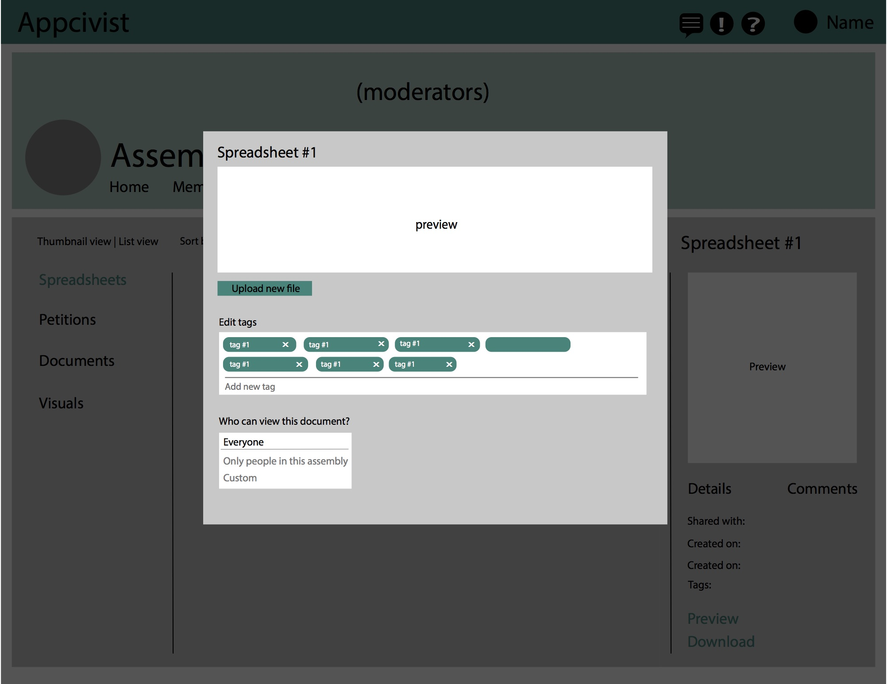
The Problem
Social activists currently find it very hard to organize themselves and to plan effective events. One of the hardest aspects is communicating with everyone who wishes to be involved with the group and advertising their cause. Much communication happens over email, and important information gets lost among dozens of threads, and it is difficult to organize events and notify everyone on a mailing list about them.Research
We interviewed current social activists to learn more about their frustrations and processes. We learned that many people have busy lifestyles but are still interested in supporting a social activist group, and therefore would like a platform that makes communication as easy and effortless as possible, without a high learning curve. Many tools, such as petition-makers and event-creators already exist, and they would prefer to continue using them rather than having to learn to use new tools. As a result, we focused on making the web application a primarily organizational tool that served as a hub.Organizational Flow
The organization of groups can become very messy, because one person can support a few different causes, but be involved in many different groups within those causes, and each person might have a different level of involvement. We organized the groups such that one person could be a part of many different assemblies, which are groups of people supporting a large, overarching cause. Within assemblies are campaigns, which are smaller groups of people targeting a more specific goal, and within a campaign is a working group, which is an even smaller group of people. Members can share resources at each level of the hierarchy.Mockups
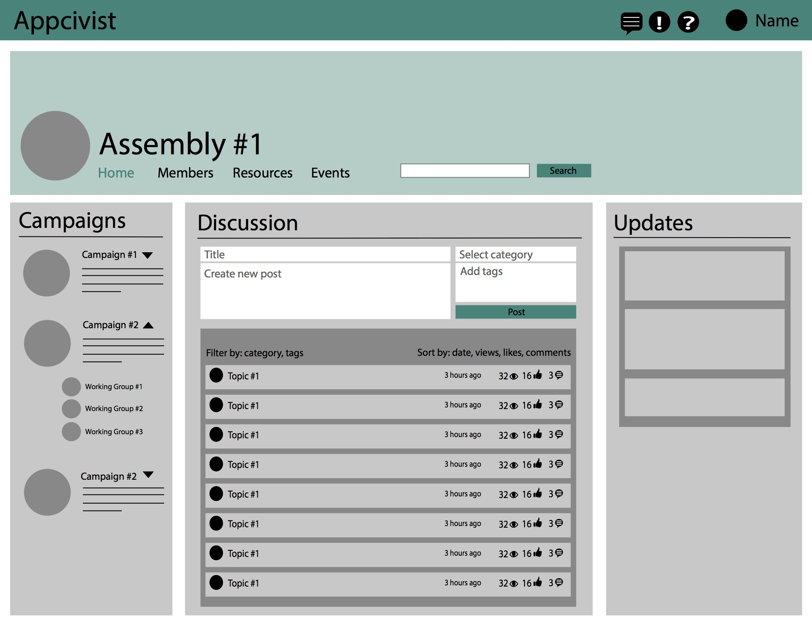
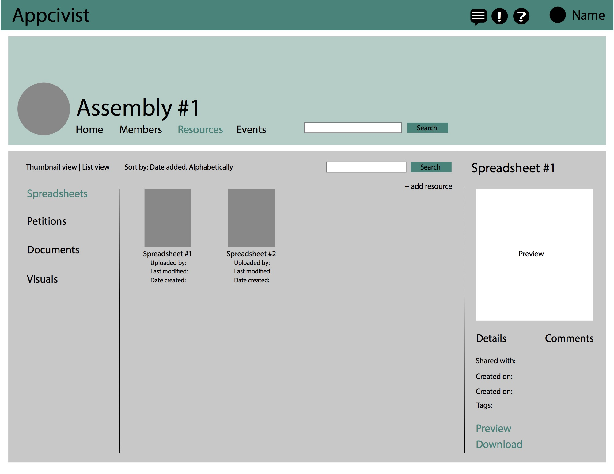
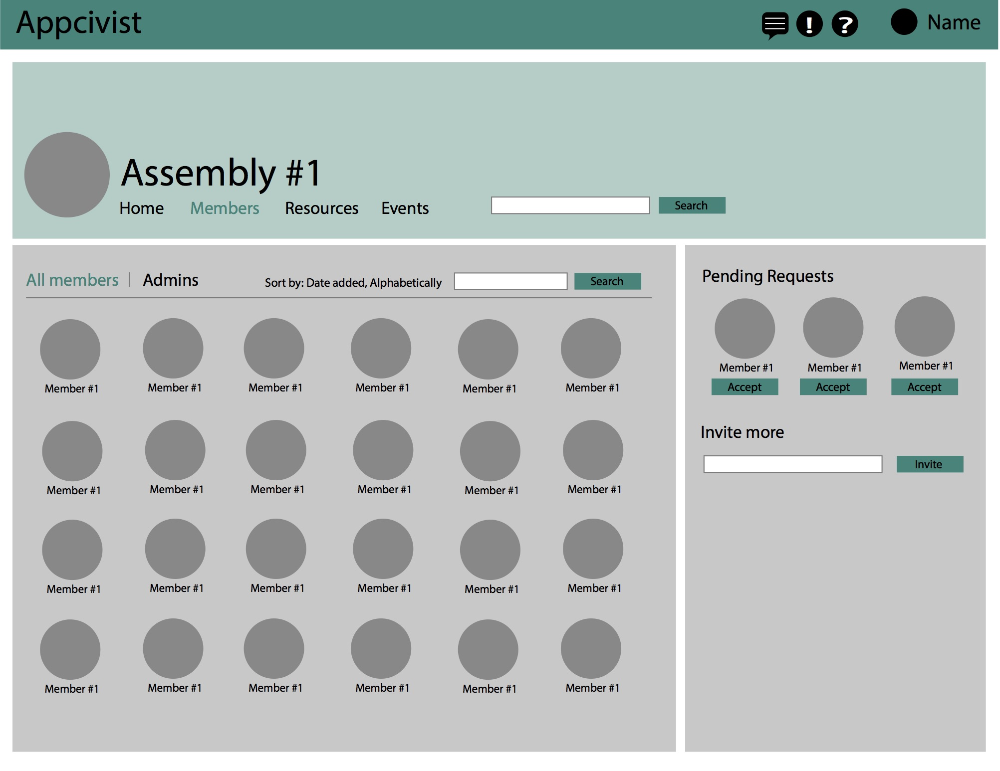
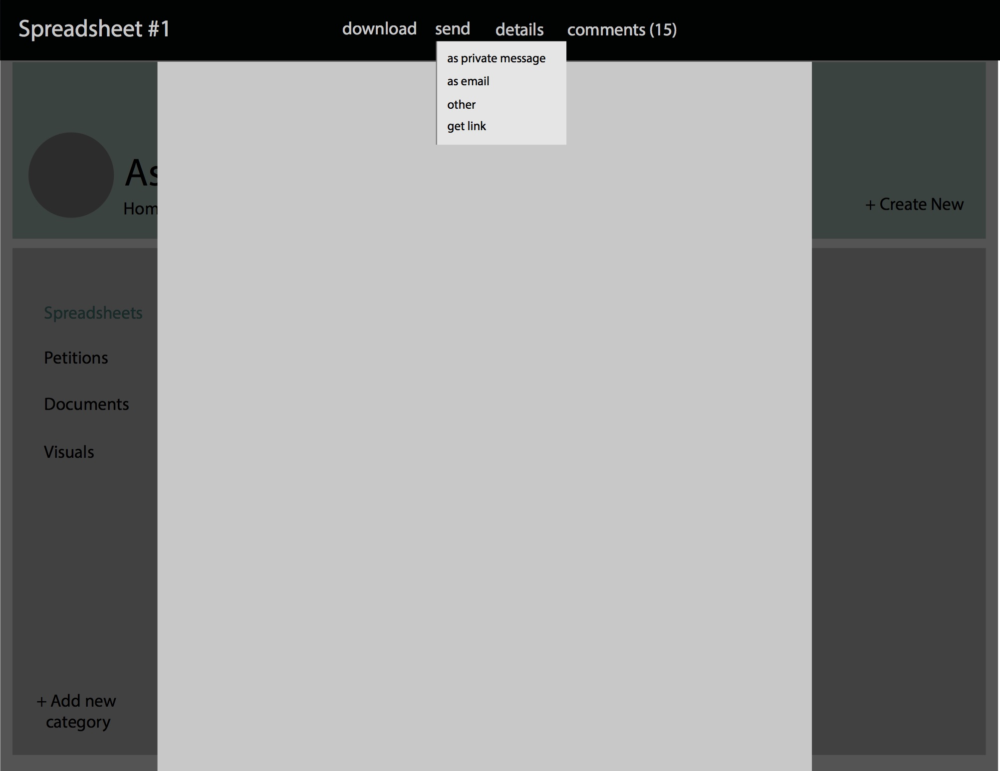
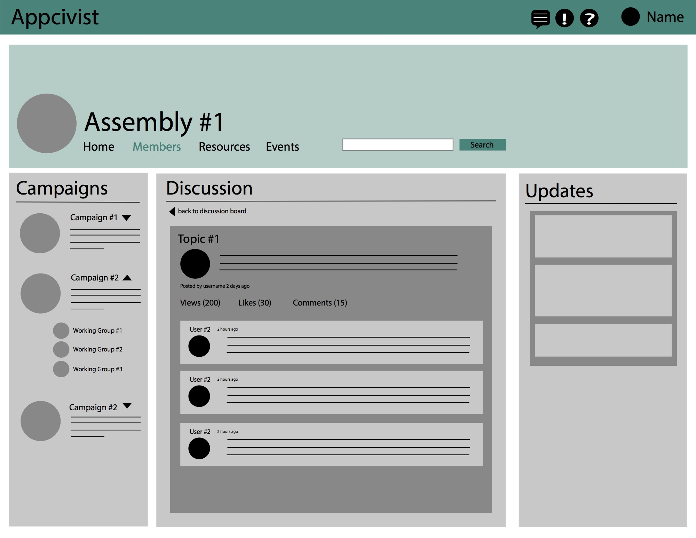
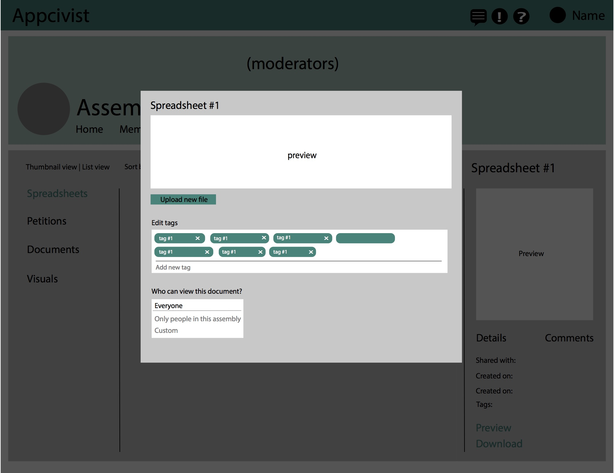